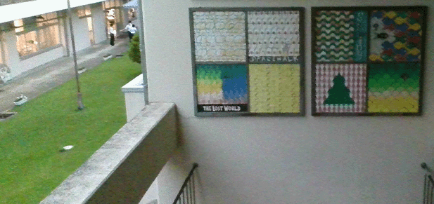

|
3B画像LOG -NEW!
MP4保管庫 サプライズ2021 虎の巻2022 旧時間割ページ 体育大会資料-NEW! |
 | ||
| INDEX | 2021.10.21 | ||
| ARCHETYPE | 2021.06.05 | ||
|
B-PLANT BYPASS ／ B-Plant 制作・更新 ： 高橋 新 [Twitter] 連絡先 ： noroom.apexserver@gmail.com , Twitter DM B-PLANT BYPASSへようこそ。ここは、各コンテンツへのバイパスです。 |
|||